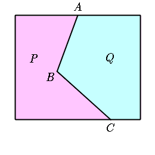
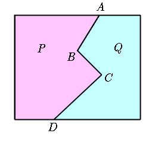

| The land is divided into two parts (P and Q) by the border ABC. Redraw a straight border line passing through point A so that each of the area does not change. |  |
| Drag the red point. Each of the areas P and Q does not change. |
| The land is divided into two parts (P and Q) by the border ABCD. Redraw a straight border line passing through point A so that each of the area does not change. |  |
| Drag the red points. Each of the areas P and Q does not change. |